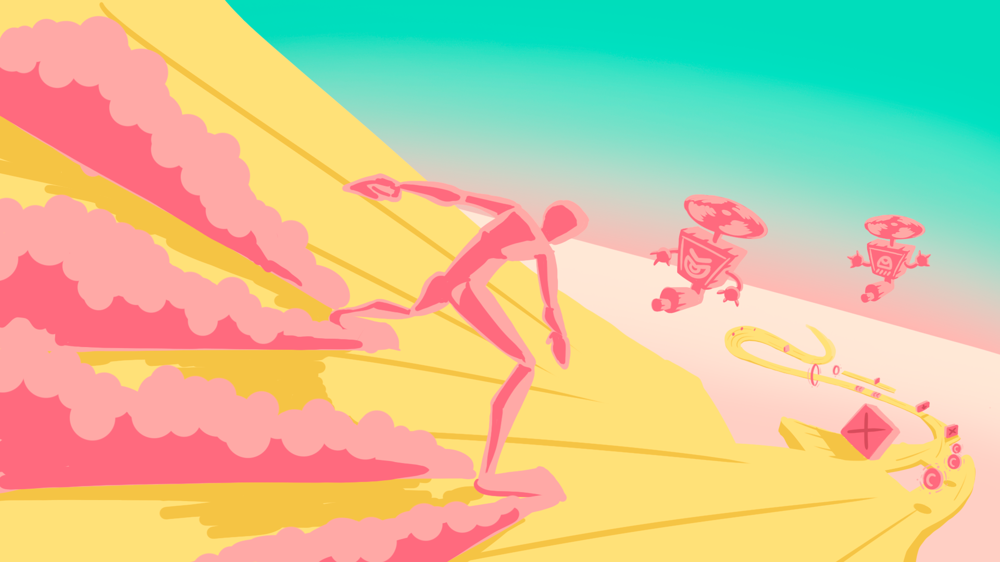

TeoriKart - Trabajo de Fin de Grado
x
Juego en RV - ViewNext
Durante mi estancia de 6 meses en ViewNext trabajé en un proyecto que consistió en un juego Endless-Runner/Rogue-Like en Realidad Virtual, en el que el jugador tiene que deslizarse por una pista esquivando obstáculos mientras obtiene monedas. Eventualmente, con esas monedas podrá elegir entre comprar mejoras de jugabilidad o invertir ese dinero para generar más para próximas ofertas de mejoras.
Herramienta de Accesibilidad Visual

Fui participe del desarrollo de una herramienta de accesibilidad visual destinada a mejorar la experiencia de juego de personas con dificultades auditivas. Esta herramienta ofrece una solución mediante la implementación de indicadores visuales en juegos 3D desarrollados en Unity. Los indicadores permiten a los jugadores percibir sonidos importantes del juego a través de señales visuales configurables en color, tamaño, vibración e iconos personalizados, asegurando así una experiencia de juego más inclusiva
Ver RepositorioMonkey Delivery

Monkey Delivery es un videojuego 2D desarrollado en SDL C++. El juego te pone en la piel de Monkey, un simpático mono que se ha trasladado al pueblo de Todesfall para trabajar como repartidor de paquetes. Tu objetivo es entregar los pedidos a los distintos vecinos del pueblo, mientras gestionas tu nivel de sueño y evitas a los enemigos que te acechan. A medida que avances en el juego, podrás comprar objetos y materiales en las tiendas para mejorar tu equipamiento y tu rendimiento. Además, irás conociendo a los habitantes de Todesfall y descubriendo el misterio que se esconde tras su aparente tranquilidad.
Ver Web Ver Repositorio